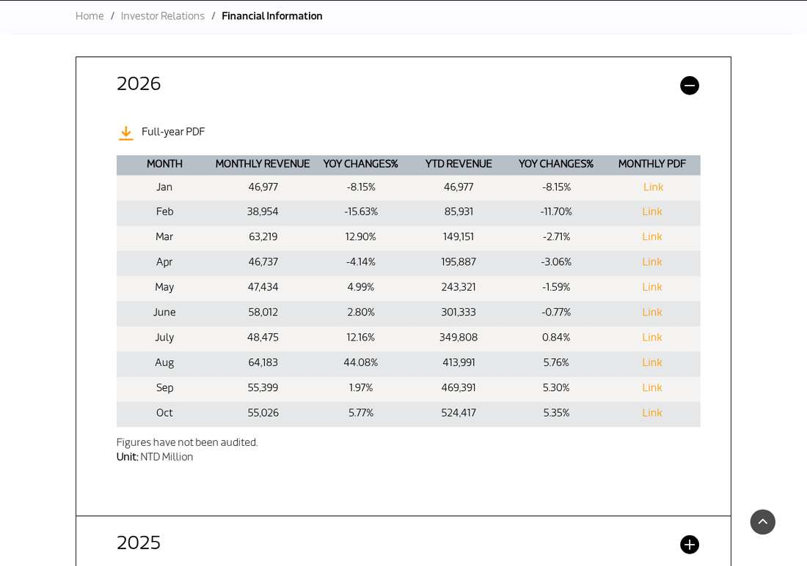

MediaTek October Sales Rise 5.77% as AI Accelerator Ramp Awaits November
MediaTek reported October 2026 consolidated revenue of NT$55.026 billion, up 5.77% year over year and down 0.67% from September, a soft start to a fourth quarter guided at NT$210.1-221.8 billion. The US$2.5 billion of AI accelerator revenue management expects this quarter has yet to show in the monthly print, so the November release is the check.
- 01THE PRINT — MediaTek reported unaudited consolidated net sales of NT$55.026 billion for October 2026, up 5.77% year over year and down 0.67% from September, in a monthly sales report published November 10, 2026.
- 02THE GAP — The October figure is a soft start to the fourth quarter, guided at NT$210.1 billion to NT$221.8 billion, and the US$2.5 billion of AI accelerator revenue management expects this quarter has yet to appear in the monthly numbers.
- 03THE WATCHPOINT — The November monthly revenue release, due December 10, which will show whether the accelerator ramp lands in time to carry the fourth-quarter guide.
WHAT HAPPENEDWhat Happened
MediaTek reported unaudited consolidated net sales of NT$55.026 billion for October 2026, up 5.77% year over year from NT$52.026 billion in October 2025 and down 0.67% from NT$55.399 billion in September 2026. Revenue for the first ten months of 2026 reached NT$524.417 billion, up 5.35% year over year from NT$497.804 billion in the same period of 2025.
The October print is a soft start to a fourth quarter that management has framed as the AI accelerator quarter. On the October 30 earnings call, MediaTek guided fourth-quarter revenue to NT$210.1 billion to NT$221.8 billion, up 25% to 32% sequentially, and said it was confident of delivering US$2.5 billion of revenue in the quarter from its first data-center AI accelerator. October's NT$55.026 billion is roughly a quarter of the low end of that guidance, so November and December must run well above the October pace for the guide to hold.
The contrast with the third quarter is sharp. Third-quarter revenue reached NT$168.058 billion, up 18.3% year over year and 10.4% sequentially, with the AI accelerator's first shipments beginning in September. October's 5.77% year-over-year growth is the slowest monthly pace of the year so far, which says the accelerator ramp has not yet shown up in the monthly print and the fourth-quarter story still has to be delivered in the final two months.
WHY IT MATTERSThe accelerator quarter has not started yet
MediaTek's fourth-quarter guidance implies an average of roughly NT$70 billion a month for the quarter, against October's NT$55.026 billion. The gap is the whole story: the US$2.5 billion of AI accelerator revenue that chief executive Rick Tsai said the company was confident of delivering in the fourth quarter, about NT$79.3 billion at the company's forecast exchange rate, has to land in November and December. An October print this close to September's level says the shipments were still building, not yet flowing at the guided rate.
The company also disclosed a second, non-Chinese customer for a custom data-center accelerator on the October 30 call, and has pointed to about US$16 billion of AI revenue ambition for 2027. Those are forward claims, not October results. What October does prove is more modest: the base business held its level, with year-over-year growth positive for the tenth straight month, while the step-change the market is waiting for remains a November and December event.
WHY IT MATTERSA monthly print, not a quarter, and the bar for November
Monthly revenue is a noisy signal by design: it is unaudited, it covers one month, and a single large customer's shipment schedule can move it. What makes this print worth watching is the sequence. September was NT$55.399 billion, up 1.97% year over year; October was NT$55.026 billion, up 5.77%. Two flat months after August's record NT$64.18 billion say the smartphone and Smart Edge base is steady rather than surging, and the fourth-quarter guide depends on a product line that only began shipping in September.
The test now is the November print, due December 10. If November jumps toward NT$70 billion, the accelerator ramp is real and the guidance is in reach; if it prints near October's level again, the full-quarter guide would require a December surge that strains belief, and the market will start discounting the US$2.5 billion accelerator figure. The next monthly release is the check.
SIGNAL JUDGMENT — ANALYSISA steady base, an unproven ramp
Tokenta Signal's judgment: This is a holding print, not a breakout, and its meaning is in the arithmetic. October's NT$55.026 billion is roughly a quarter of the low end of the fourth-quarter guide, so the AI accelerator revenue that management says it is confident of delivering has to arrive in November and December or the guide misses. The base business is steady, with ten-month revenue up 5.35% year over year, but the step-change the market is paying for is still a promise, not a print. The honest check is the November release on December 10: a jump toward NT$70 billion confirms the ramp, another flat month puts the US$2.5 billion figure in doubt.
WHAT REMAINS UNCERTAINWhat Remains Uncertain
EVIDENCEEvidence

MediaTek monthly sales report, read in full: MediaTek Inc. (TWSE: 2454) announced that consolidated net sales for October 2026 totaled NT$55,026 million, up 5.77% year over year from NT$52,026 million in October 2025 and down 0.67% from NT$55,399 million in September 2026. January through October 2026 net sales totaled NT$524,417 million, up 5.35% year over year from NT$497,804 million. The figures have not been audited.
PRIMARY SOURCESPrimary Sources
- MediaTek: MediaTek Inc. Monthly Sales Report – October 2026
https://www.mediatek.com/hubfs/MediaTek-Assets/Pdfs/Monthly%20Reports/2026/Monthly%20Sales%20Revenue%20October%2c%202026.pdf - MediaTek: Financial Information – Monthly Reports
https://www.mediatek.com/investor-relations/financial-information#monthly-reports - Taiwan Stock Exchange MOPS: MediaTek Monthly Revenue Filing, October 2026
https://mopsov.twse.com.tw/mops/web/t146sb05 - FourWeekMBA: MediaTek Expects $2.5B of AI Accelerator Revenue in Q4
https://fourweekmba.com/ai-mediatek-expects-2-5b-of-ai-accelerator-revenue-in-q4/ - MediaTek: Consolidated Statements of Comprehensive Income, Third Quarter 2026
https://www.mediatek.com/hubfs/MediaTek-Assets/Pdfs/Quarterly%20Earnings%20Release/2026/Quarterly%20Earnings%20Release-2026Q3/Financial%20Statements.pdf
RELATEDRelated Intelligence
- Nebius Blames Third-Party Capacity Delay as Shares Slide 12% After Earnings Call
- Nebius Plans $40-45 Billion of 2027 Capex as Revenue Slips, Shares Reverse
- Nebius Q3 Revenue Jumps 571% to $981 Million, Beats Estimates, Projects $12-13 Billion in 2027 Sales
- Anthropic Says It Has Met Its Own AI Safety Threshold as AI Speeds Up Its Research